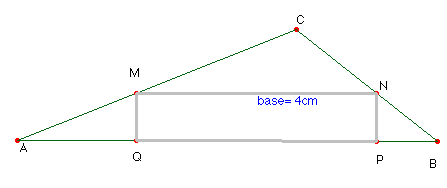

Solución del profesor de Matemáticas del IES
Fray Luis de León de Salamanca Saturnino Campo Ruiz
Problema nº 73.-
Dado un triángulo de lados 7 cm., 5 cm. y 3 cm ,inscribir en él un rectángulo
de base 4 cm.

Solución.- El rectángulo inscrito MNPQ
determina en el triángulo CMN homotético al CAB, donde CM =
k CA, CN = k CB y
MN = k AB. La razón de la homotecia es k =
AB/MN, es decir k = 4/7. Una homotecia
de centro C y razón 4/7 nos transforma el triángulo
CAB en el CMN y el segmento AB en el MN de longitud 4 como se pedía.
Nota.- En el dibujo hemos tomado como unidad de
medida 2 cm.